Atmosphere
1.0
The keys are ringing as they hit each other while trying to open the front door. As I step inside, the busy noise from the street stays behind me. Silence welcomes me. I can hear my soft steps on the carpeted stairs as I walk up after a long day of work. I turn on the kettle and walk into the living room, opening the curtains. The sunlight shines through the embroidered curtains my mother gave me, creating a beautiful pattern on the dining table and the wall.
The table with four chairs stands in front of the window. Some of the chairs have things hanging from them—unused items. These remind me that once we all sat here together. There is the embroidered table cover with flowers in the middle, the open book on the left with reading glasses, and the breakfast leftovers.
The kettle is loud in the background, and the clock is ticking. Through the open window, the birds chirping can be heard. There is an empty cigarette box, some opened cookies, and empty plates. The mug of freshly poured tea steams, and the curtains softly move at the window. The hairbrush is carefully placed in the corner of the table, alongside a small mirror. Someone is hanging clothes on the dryer, and the soft thuds of the clothes fill the air, breaking the silence. The red Persian carpet under the table is soft and delicate. It makes it comfortable to sit down and put your feet up. The picture frames are a bit grey. Even though they represent happy memories, the plants on the shelves need some watering.
When the night comes, and the sun sets, the window closes, but you can still hear the light chirping of grasshoppers in the background, and their singing holds the space, creating a sense of comfort in this silence. The curtains move back, covering the window, and the soft light from the standing lamp goes out. Nothing was touched on the table; it felt too sacred to move it. The mug, the plate, the empty box with the lighter, the same page on the opened book, and the reading glasses, cheating a space that only exists here and within you.
Entering
1.1
Grief is natural and inevitable. We miss shared moments, grow nostalgic, and stare at objects left behind. Our spaces feel different, but daily life continues.
I was not unfamiliar with grief before — I attended funerals, I said goodbye to important people in my life, but when my mother passed away unexpectedly in 2024, grief became something else. Something I had not experienced before happened: my mother’s absence, an essential role now missing from my life, suddenly became present once again— without her being here.
Even simple noises from my apartment can remind me of happy memories from my family's house in my home country. Eating alone at the table now feels different. Grief made me realize how much my way of talking, cooking, and handling life's issues resembles my mother's. And just come to think of it, these gestures, routines, memories, sounds, they exist within me and the space we shared. Her absence is never truly gone, but continues to shape into an existence that’s neither physical nor visible.
The many objects that remind me of her and now carry a sentimental weight are kept around the house. They are constant reminders of the past, a presence, and become something sentimental. Evoking memories, discussions, and happy or sad moments together. Or maybe they just remind us of the ordinary life that we had, and how it continued.
In this essay, I will explore the feeling of absence, the role that is suddenly missing, and how we adapt to the continued presence of a loved one after loss. Through this project, I explore the domestic sounds and their impact on our sentimentality and nostalgia. The sounds I am including – keys, fridge humming, cars passing by, someone drying clothes, kettle, bird chirping, footsteps, door opening, etc. – fill out the space and room for us. I am exploring how these sounds, combined with a setup space in the house, including objects such as plates, mugs, hairbrushes, keychains, curtains, and flowers, create the presence that I am researching through this process. To build emotional tension, I use interviews with mothers and children, exploring how voices alone can create presence.
I ask: How can film language make absence visible?
Let me introduce my project.
The Space We Still Exist is a short film moving through two phases. The two phases are verbal language and silence. In the first half, we follow the main character outside and hear interviews about motherhood alongside still shots. In the second phase, we follow her home, entering an empty house to view life after someone is gone and presence lingers. This essay explores core elements of the film and five key references that inspired my project. After atmosphere and entering, we move to Searching, explaining my inspiration. The Ghost chapter explores theory, while Memory, Voices, and Staging discuss key references.When present in the room, we don't just observe; we search. We search for a familiar hand, voice, footstep, laughter—a presence. It's a search for something that is long gone but exists in our headspace. Embracing this absence creates emotional weight. Longing and nostalgia arise as I look around and re-explore lived experiences: cooking, holding hands, spring air on a sunny day.
Searching
1.2
When present in the room, we don't just observe; we search. We search for a familiar hand, voice, footstep, laughter—a presence. It's a search for something that is long gone but exists in our headspace. Embracing this absence creates emotional weight. Longing and nostalgia arise as I look around and re-explore lived experiences: cooking, holding hands, spring air on a sunny day.
This chapter introduces my inspiration: searching for what is absent yet familiar. Understanding absence and revisiting memories. The scene is inspired by searching for something no longer present yet still felt.
This idea connects closely to Embracing by Naomi Kawase. She is a filmmaker whose work explores memory, family, and absence through intimate, autobiographical storytelling.
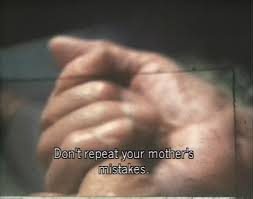
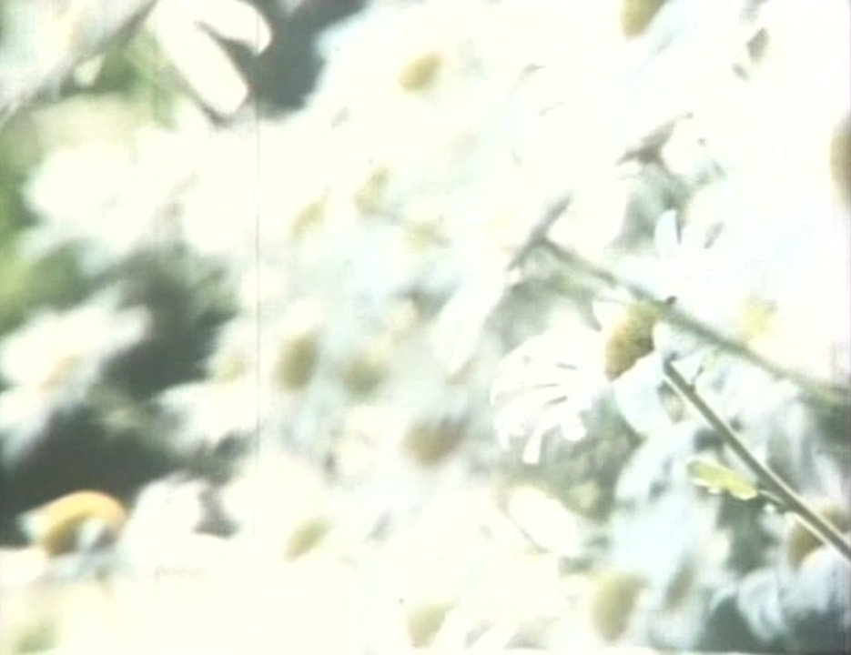
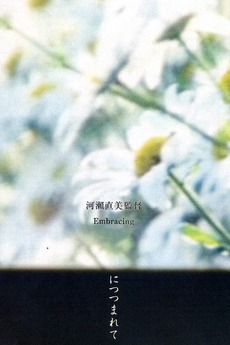
In this documentary film, she searches for her absent father. Through conversations with family members and moments in her home, she tries to understand her father's absence and why he was not present. The film is intimate and personal, built on memory, questioning, and longing. Her father never appears on screen, yet he becomes the film's central presence.
This absence is carried through in voices, pauses, and the atmosphere of the domestic space. The camera often remains still, observing rather than directing. Conversations unfold slowly, sometimes without showing the speaker, allowing the space itself to hold the emotion. This strongly resonates with my projects, as I aim to use the interviews as a build-up that unfolds at the end. When I use the recorded parts of the interview for example when I asked “What is your dearest memory of your children?” and the elaborate, describe their memory, while for extended time, we can watch statics shoots of someone cooking, tree leaves are moving, a car passing by, I expect to build on the persons voice, without actually showing them.
My film explores how absence can exist without physical visibility, as my mother’s presence lingers without being seen. A voice, sound, or gesture can suggest someone’s presence. Like Kawase, I use stillness and duration to convey emotion. For example, in my movie, when I let objects, such as an empty plate with a mug, sit still on the table for 1 minute, I expect the silence and slowness to guide the viewer's emotion. I seek to create Kawase’s soft, heavy atmosphere, where hands preparing a meal, birds flying, and family photos fill the space and voices tell the story.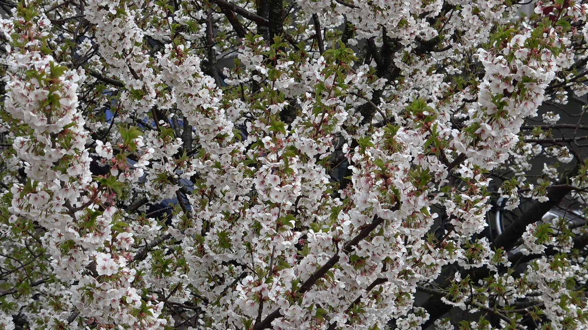
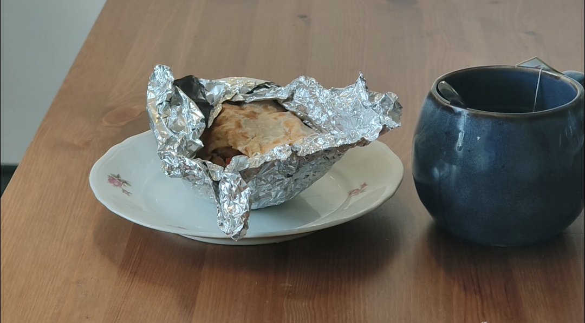
Ghost
1.3
“I sit on the chair in front of the garden; the air of the sunny spring day hits my cheek. I notice the smell of the chicken and the heat coming from our kitchen. It is boiling there. While the chicken was being made, the tiles got mopped, and all the windows were open. The curtains move however they wish, except me. My mother banned me from going inside until the tiles dried. “
As I thought back to this, I finished my own tiles in my house. There is no spring here yet, and no sunlight so far. I stand outside the room now, because I know I should wait until the tiles are dry. But there is no wind this time, and the curtains are still. While I wait, I just listen to the fridge hum softly and the clock tick. Alone, these two sounds evoke so many memories in me, which now feel like a distant, non-existent place.
This is a faint memory of mine from around the time I was 11, I think. It seems so far away, I can barely recognize it. In this scene, I would like to introduce the following reference, which was a core part of my project's theoretical framework.
Reading the Spectrality’s Reader by Edited by María del Pilar Blanco and Esther Peeren in 2013, helped me to think of absence as not emptiness, but something active that shapes presence.
Historically, ghosts were treated as possible actual entities, something that could be believed in, observed, or even scientifically tested. However, in contemporary theory, this understanding shifts. The ghost is no longer important as a literal figure, but as a way of thinking.
The idea of “haunting” in this context is not about visible ghosts, but about how something that is no longer physically there still shapes how we experience space, memory, and time. What disappeared does not fully leave; instead, it returns through traces, shapes our perception and experience. That’s what spectrality describes, a condition where something is neither fully present nor completely absent. It exists in between visibility and invisibility, reality and imagination, past and present. Rather than asking whether something is real, it focuses on its effects.
This is where the concept becomes part of my project, exploring this condition I mentioned above, and seeing how film language can work with it. The absence I work with does not function as emptiness, but as something that continues to act. It is not visible to the body; it is present through traces, for example, in my film setup, most scenes are recorded in front of my window. There are two reasons for this. First, the curtain I use is from my home country; my mother gave it to me. This trace—looking at this embroidered curtain—always brings a lingering feeling of home.
Second, I leave the window open during filming, allowing outside sounds to enter the space: neighbors talking, wind moving the curtains, cooking smells, birds flying past, and someone working with wood. These sensory elements become traces of presence within the scene. The domestic environment becomes a place where this condition appears. The objects are still, and the room is quiet, yet something feels active. It's not located at a single point, but emerges through memory, space, and perception.
Through my practice of making the movie, I am working with this in-between state. When I separate the speaker's voice (See chapter Voices) from the body, I am exploring how presence can exist without a visible form. When we listen to sound without seeing the source, the focus shifts from what we see to what we feel. In this sense, the “ghost” in my work is a condition, an absence that remains active, embedded in everyday life. In this framework, I position grief as not something that belongs to the past, but something that continues to shape our perception and daily life.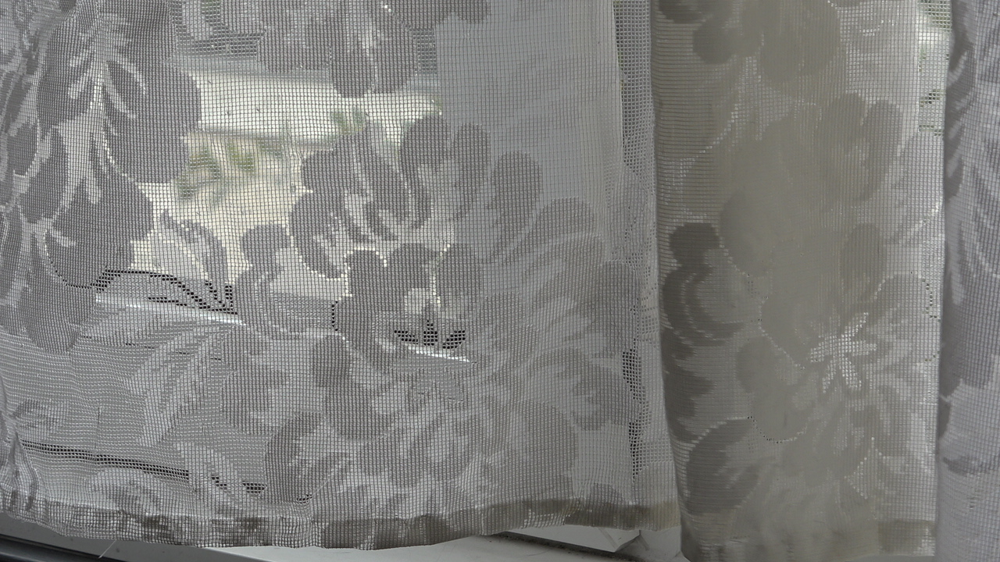
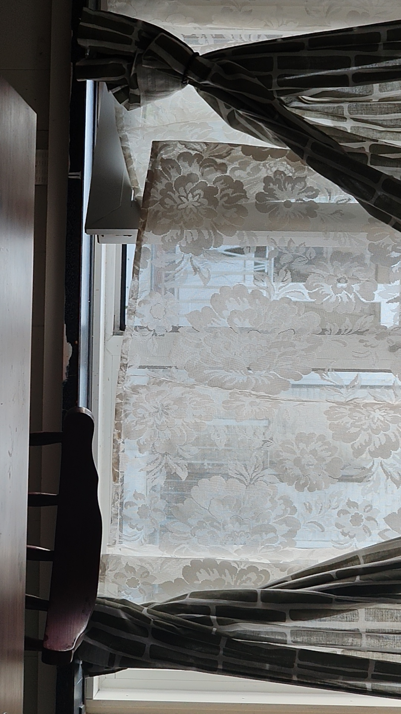
Memory
2.0
Walking into the room, listening to the passing cars outside. This time, I just stand there and look around. I look around the space we used to share. I take it in, as it does not look any different from yesterday or the day before. The brush is there, the finished tea mug is standing still on the table, and the keys are abandoned on the corner of the table. These objects are proof that a presence once dwelt here, and they hold it dearly.
I hold it dearly.
Silence fills the room and becomes our narrator. The afternoon light hits the room, and it becomes a silent experiment. The lights slowly move across the space, touching the table, the wall, the objects. Nothing changes yet; something feels different every time I stand here. Time does not move forward; it seems frozen.
A frozen space, where everything is a circular routine, motion.
Silent experiment, how will this space behave?
To answer this, we need to look at the following reference: Maya Deren's Meshes of the Afternoon. was a Ukrainian-born American experimental filmmaker and artist, known for pioneering avant-garde cinema through her use of symbolic imagery, repetition, and non-linear narrative structures.
The film is a silent, experimental work set in a domestic environment, where meaning is created through repetition, gesture, and symbolic objects. Rather than following a linear storyline, the narrative unfolds in cycles, where the same actions and movements repeat with slight variations. This creates a sense of time that feels suspended, where the boundary between reality and memory becomes unclear. Objects such as a key, a knife, or a flower are not just props, but emotional triggers that carry symbolic weight. The camera often fragments the body, showing hands, legs, or partial movements, which creates a distance between presence and identity. Through this, the film builds a psychological space rather than a narrative one.
This connects to my project, which also works with repetition, domestic space, and everyday objects as carriers of memory, such as unfinished plates, dried-up mugs, keychains, hairbrushes, glasses left unfolded, slippers placed next to the door, etc.
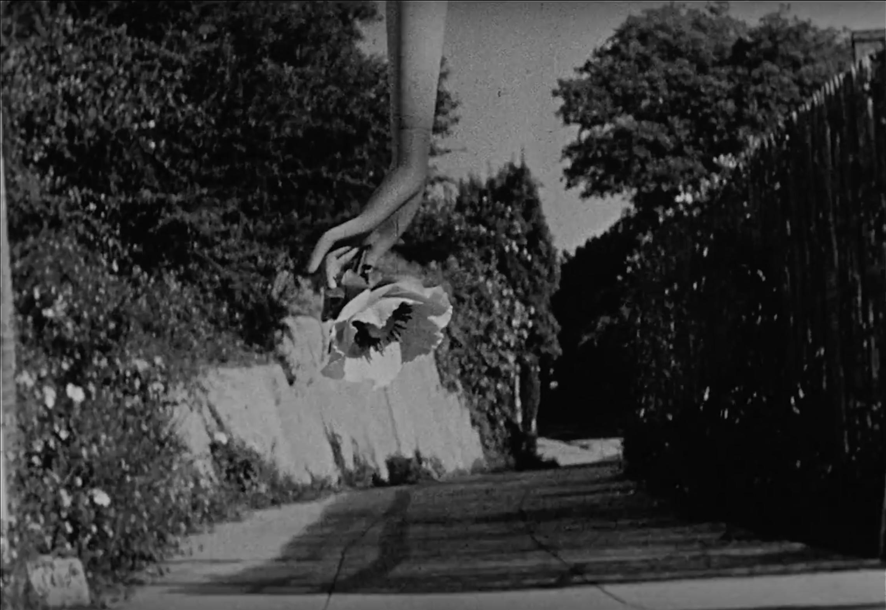
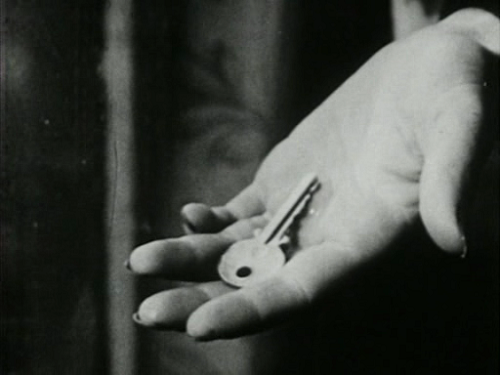
Like in Deren’s film, I am interested in how meaning can emerge without direct explanation, through rhythm, stillness, and return. For example, I have experimented with shots of 1-2 minutes, a table set with flowers, a plate, a mug, and an open window, where the only movement is the curtain. In the background, we can hear the birds, passing cars, kettle, and footsteps. While Deren’s work is silent, I add sound and voice, creating contrast between what is heard and seen, as in Kawase’s film.
In my film, objects shift from functional to symbolic. The mug and keys are no longer just objects. As we see them with the ticking clock, everything feels slower. They begin to carry memory and presence. I experimented with how long to keep the camera still before something feels present. The filming began with smell, repetitive actions, placing a cup, sitting down, standing up, walking through the room, and I noticed that repetition started to create a different kind of narrative. This narrative is not going forward but rather going in circles. By allowing these gestures and objects to repeat, I am trying to see whatever meaning can emerge without explaining it. With this, I expect the viewer to feel something is there even if nothing is shown.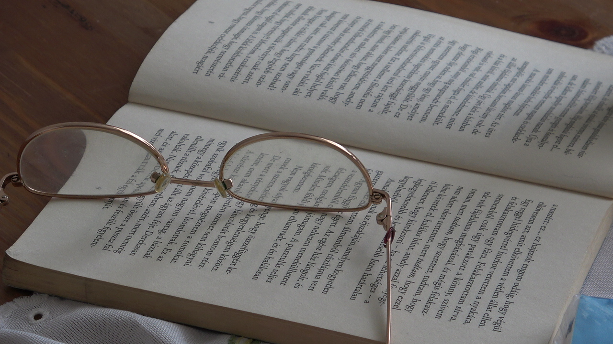
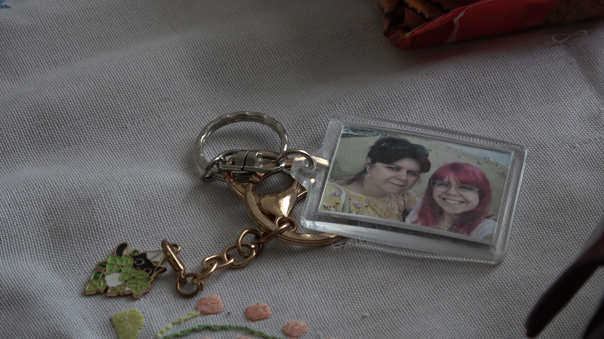
Voices
2.1
Do you feel like being a mother is an unforgiving role? How would you describe your relationship with your own mother? Do you think your role as a mother outlives you?
I ask these questions as we sit across from each other. The first interview I had with a mother was raw, emotional, and intimate. Her voice was sometimes shaky, tearful, and light, depending on the question I asked. “Being a mother is sometimes not grateful". She spoke. “But the biggest treasure in my life is also my child”. She also said it. Her voice occupies the room as we look at memories. Mothers’ and children’s voices fill the space, guiding us through this emotional room.
Arriving at this part of the project and essay, we can feel some “movement” and verbal storytelling from others. This understanding of motherhood can be further expanded through the essay “Essay on Mothering Myths,” by Laurie Cluitmans & Heske ten Cate (2021), which critiques the idealized image of the “good mother” as endlessly giving and self-sacrificing.
In this essay, we examine how society constructs an idealized image of motherhood, the “good mother” as endlessly giving, emotionally available, patient, self-sacrificing, and fulfilled by care work. How motherhood is shaped by expectations, moral judgment, and invisible emotional labor rather than personal feeling.
In this essay, we examine how society constructs an idealized image of motherhood, the “good mother” as endlessly giving, emotionally available, patient, self-sacrificing, and fulfilled by care work. How motherhood is shaped by expectations, moral judgment, and invisible emotional labor rather than personal feeling.
By showing absence and grief, the project asks what remains of a mother beyond her physical presence, both emotionally and culturally. This text grounds my project in critical thinking about motherhood as an institution, not just a personal memory. While working on the project, I also had the chance to start interviewing. The first interview with a mother in her early fifties was really emotional and raw. I noticed how easy it was to speak about their children, but when I asked about their own mother, it suddenly felt heavier. I found this part equally important as the still shots or the silence. I mentioned in my Entering chapter that this movie has two narrative lines, and this is the first one. Verbal narrative stands in stark contrast to the nonverbal silence.
Women discuss sacrifice and worry; children speak about their relationship with their mothers and what they mean to them. Using this interview allows me to build two main narrative lines in my project. This is the first one, the verbal one, where I am working with only the voices of the interviews and using different static shots in the background to make the conversation feel lighter, connect closer to the end product of the movie, and the second part.
The static shots include street views, cooking, hands touching, caressing someone’s cheek, hair, flowers, birds flying, and so on, which fit together systematically and visually lead us to the second part of the movie.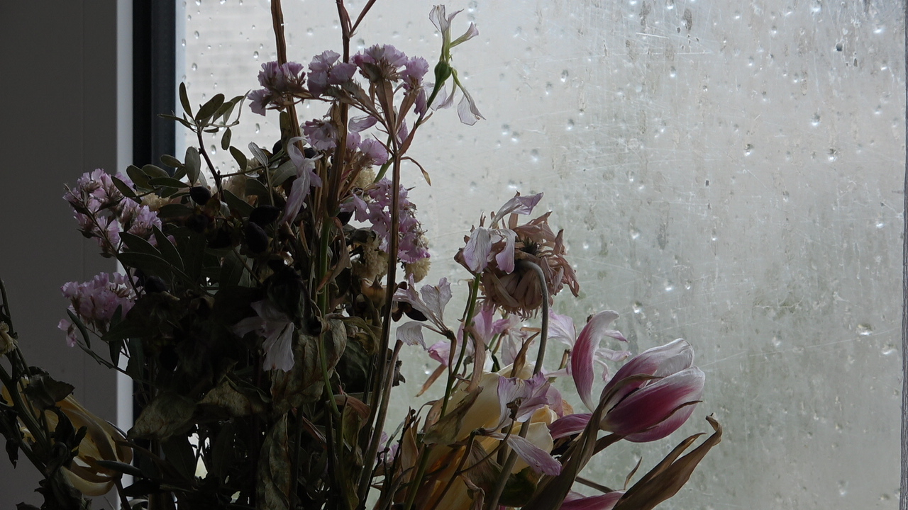
Staging
2.2
As silence fills the room, we can look into what inspired the room and how. The idea of constructing a scene rather than documenting it connects to Jeff Wall's work The Destroyed Room, in which staged environments explore memory and constructed reality.
It is a large-scale color photograph that stages the aftermath of a violent destruction inside a bedroom. Inspired by art historical painting traditions, the work carefully constructs a chaotic scene of torn fabrics, broken furniture, and scattered objects, resembling a theatrical set rather than a documentary moment. The image explores themes of violence, consumer culture, and the tension between reality and artificiality in photography. This inspired how I staged my filming space—adding a fake wall and creating a room within a room.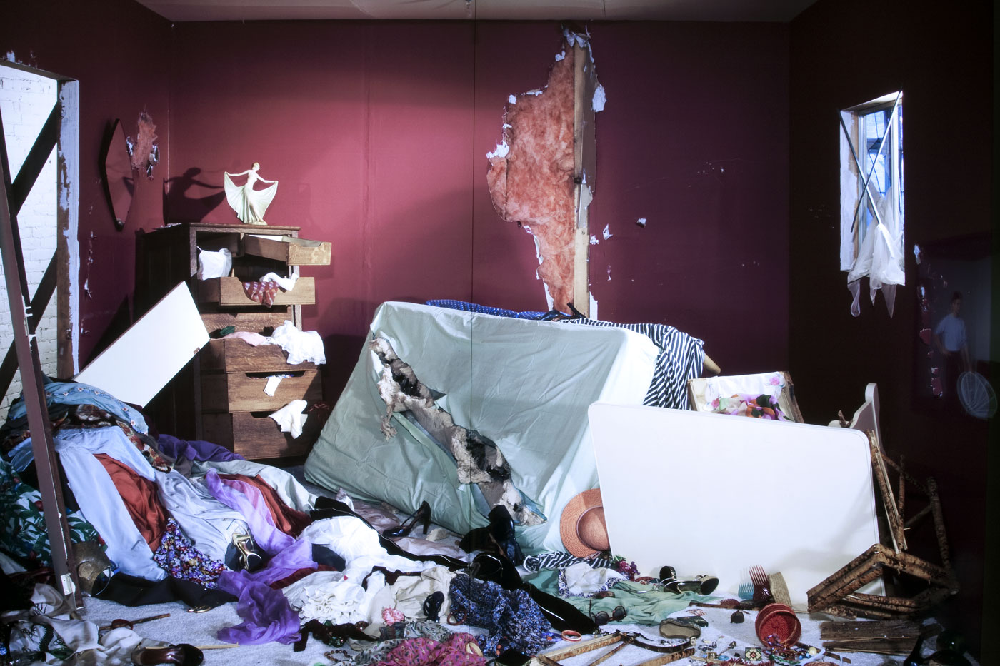
It led me to transform my living room into a filming space. After using wood and building a fake wall in my living room, I created a room within a room. This allowed me many new possibilities, not just to separate the filming space but also to explore new angles, lighting, and a wider filming space. To achieve stillness and repetition, I carefully staged the set: curtains, flowing light, and arranged objects—mug, plate, hairbrush, purse, keys.
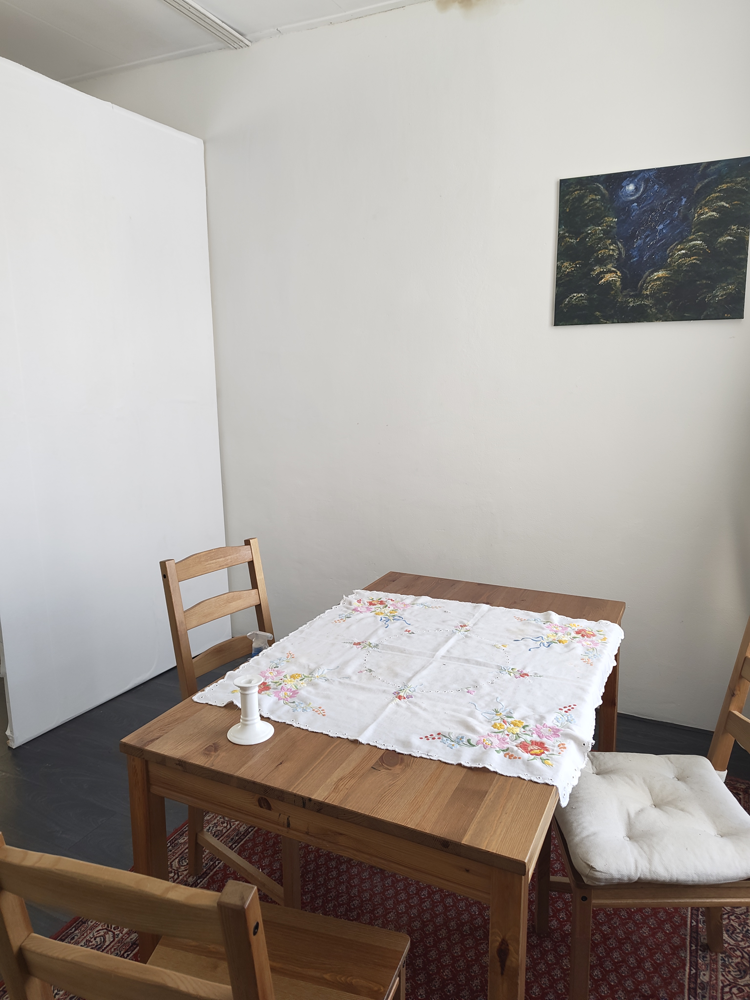
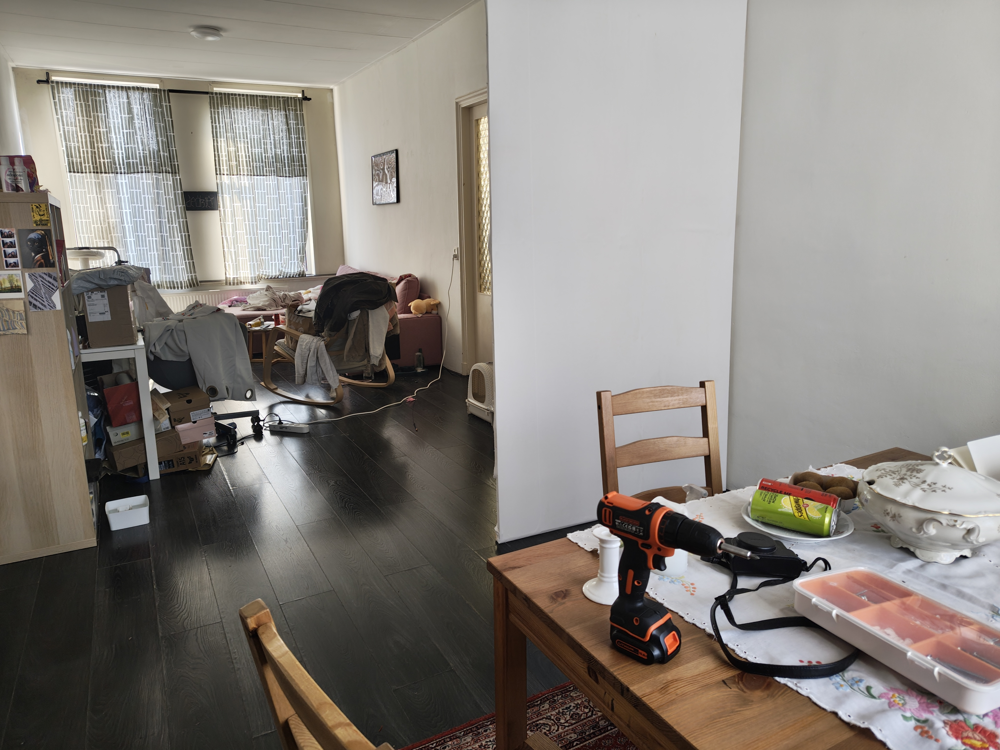
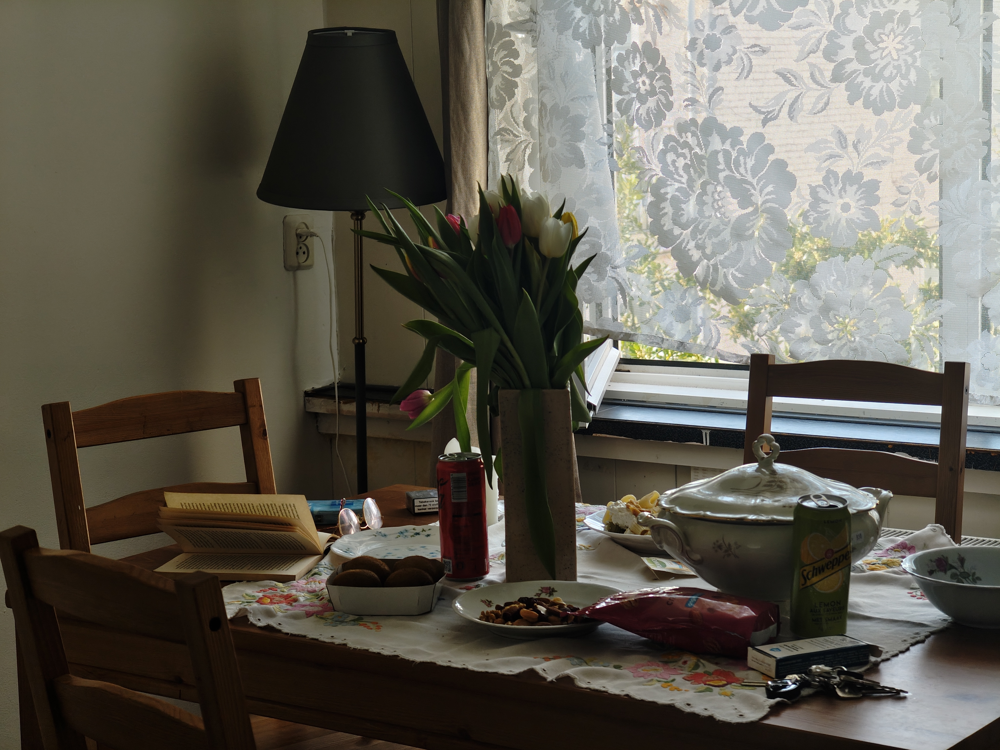
Conclusion
2.3
This research began with personal loss, but has grown into understanding how silence, absence, nostalgia, and space shape daily life.
Over the process of working with film, sound, and interviews, I discovered how presence can emerge without being visible. Objects, gestures, and spaces carry memory, and through repetition and duration, they begin to hold emotional weight. Our home becomes more than just a room; it becomes a place that holds grief and lets it live continuously there.
Over the process of working with film, sound, and interviews, I discovered how presence can emerge without being visible. Objects, gestures, and spaces carry memory, and through repetition and duration, they begin to hold emotional weight. Our home becomes more than just a room; it becomes a place that holds grief and lets it live continuously there.
I did not try to represent grief directly, but to explore how it moves through space and transforms over time. Absence creates space and presence—something to sit with, not resolve. The interviews helped me expand these experiences beyond my own perspective. Listening to others speak about motherhood, their mother-child bond, and shared memories made my research and project more collective, rather than just focusing on my personal loss.
Overall, this project remains open; the film is still developing, and the questions are not fully answered yet. The work will continue as an exploration of how we live with absence and how it becomes part of our daily existence.